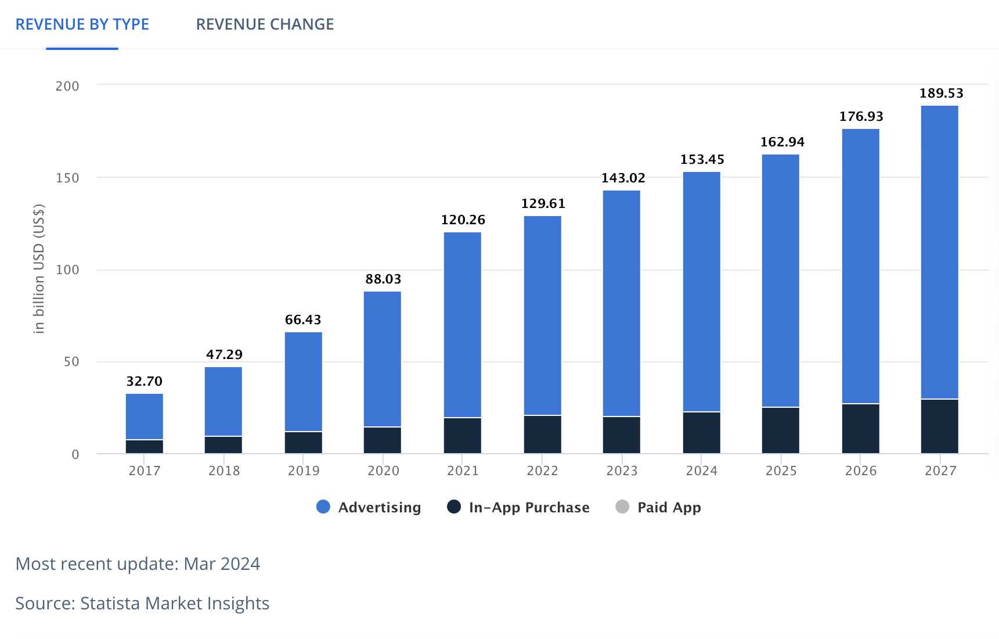
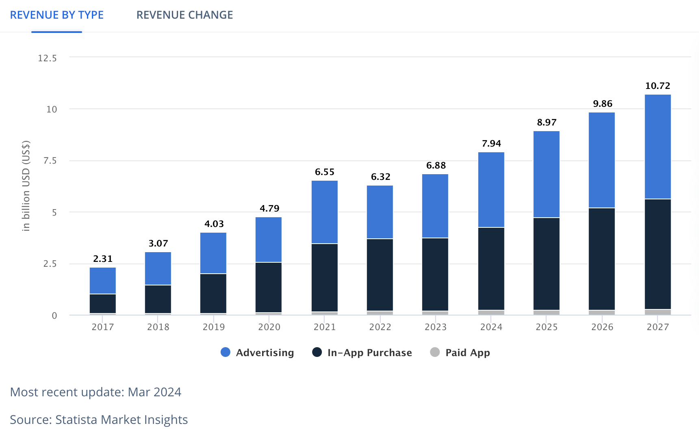
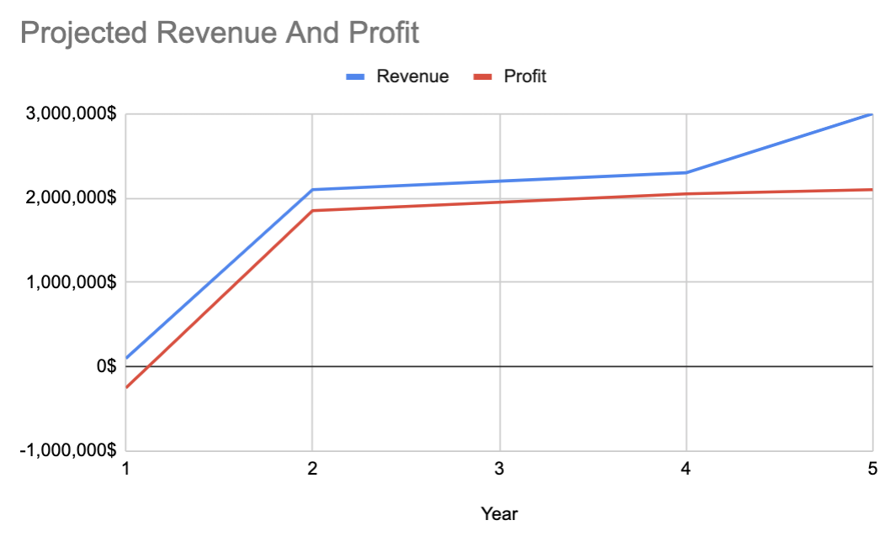
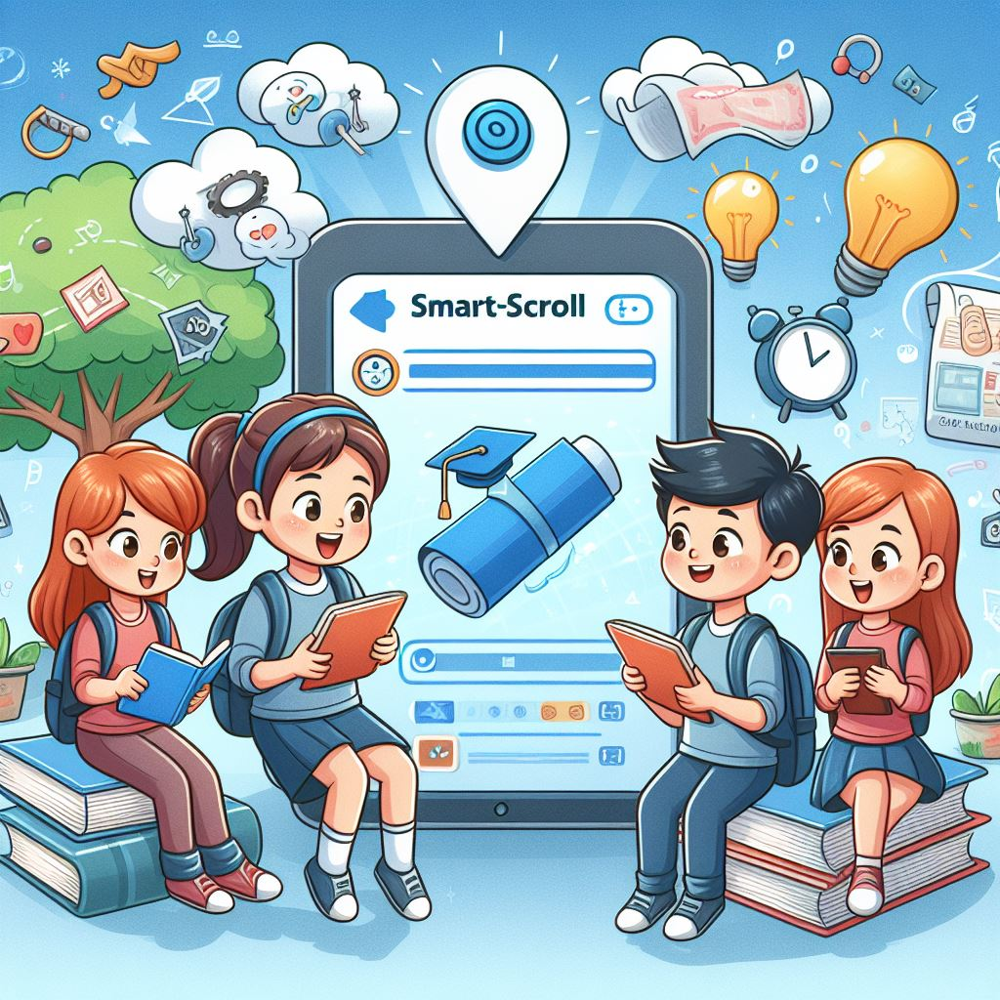

Our Market
At Smart-Scroll, we inhabit a unique space at the intersection of two dynamic markets: social networking and education. Let's delve into the specifics:
Social Networking Market
The social networking market revolves around the use of digital platforms to facilitate connections among individuals, spanning from forging new friendships to networking for professional opportunities. Primarily targeting younger demographics such as Millennials and Gen Z, this market has witnessed exponential growth over the years. According to Statista (2024), the current market value of the social networking industry stands impressively at $153.4 billion, with an anticipated revenue growth of 7.3% from 2022 to 2027.
Revenue By Year In The Social Media App Market
 The Social Networking market contains apps that allow its users to stay connected and up-to-date about the lives of family and friends.
Education Market
In the context of Smart-Scroll, the education market
encompasses applications that augment the learning process,
offering educational content and resources to users of all
ages and backgrounds. With a primary focus on students
across various education levels, this market has experienced
rapid expansion in recent years. Statista (2024) projects
significant growth in revenue, with an initial surge of
15.2% followed by an expected growth rate of 10.49% in the
subsequent years.
Revenue By Year In The Education App Market
 The Education market contains apps that enhance the learning process, typically by way of interactive gamified activities.
Resource Generated By DALLE-3
Competitive Landscape
Smart-Scroll faces competition from established leaders in the social media sphere, notably TikTok and Instagram. These platforms offer a plethora of features for user connectivity, ranging from direct messaging to hosting short-form video content. While they excel in fostering social interactions, they fall short in providing dedicated educational resources and tools, setting Smart-Scroll apart in its commitment to blending social networking with educational enrichment.
Strategic Positioning
By strategically positioning itself at the intersection of social networking
and education, Smart-Scroll leverages the strengths of both markets while
addressing their respective limitations. With a focus on providing engaging
educational content within a social networking framework, Smart-Scroll offers
a unique value proposition to users seeking a holistic learning experience.
As we continue to innovate and evolve, Smart-Scroll aims to redefine the
boundaries of education and connectivity in the digital age. Join us on this
journey as we pave the way for a brighter future in learning and social
engagement.
Marketing And Sales Strategy
To attract users, Smart-Scroll will deploy digital advertising campaigns on social media platforms targeting our student demographics. Partnerships with educational institutions, STEM organizations, and influencers will expand our reach and credibility. We'll leverage machine learning algorithms to offer personalized content recommendations, while incorporating achievement badges and a leaderboard to incentivize engagement. Facilitating community interaction will foster user retention. Our sales team will engage directly with educational institutions and organizations, supplemented by email campaigns targeting educators and administrators. Smart-Scroll's app will be free, supported by ad-based revenue, ensuring accessibility to all users.
Financial Plan
Smart-Scroll will generate revenue through ads, with an ad-free premium model available for $10/month. An initial investment of $500,000 will be allocated towards further development ($200,000), marketing and brand awareness ($150,000), employee salaries and expenses ($100,000), and customer support ($50,000). Financial projections anticipate $100,000 revenue and a loss of $250,000 in the first year, with profitability achieved in the second year and significant growth by the fifth year, culminating in a projected revenue of $3 million and a profit of $2.1 million.

This graph shows projected revenue for Smart-Scroll over a period of five years

Resource Generated By DALLE-3
Unlocking Smart-Scroll's Competitive Edge
Smart-Scroll is ready to outperform its rivals by focusing on
what we do best: innovative features and promising
opportunities. Our standout qualities include a smart
recommendation system, a trusted name in education, and
short, easy-to-understand educational videos. Unlike regular
social media, Smart-Scroll's style is perfect for learning and
remembering things, as shown by studies from Bradbury (2016) and Zhu (2022).
But we're not without challenges. One big issue is that not
many people know about us yet, which is tough when there are
big players in the market. But we're turning that into a chance
to grow. By teaming up with universities and spreading our
content worldwide, we'll make sure more people know about us
and have less reason to stick with the big guys.
In a market where buyers have a lot of power and competition is
fierce, Smart-Scroll has a clear plan. We'll use our unique
brand and educational content to stand out and make it harder
for users to switch to other platforms. With our focus on new
ideas and teamwork, Smart-Scroll is ready to change the game in
education.